04-7124-3780
24時間365日対応
法要・法事のご案内
cuisine野田市で会食・お振舞・法要までお任せ下さい。
新鮮な料理のお振舞で
法要や法事をサポート致します。
故人の冥福を祈り、その霊を慰めるための営みを法要といいます。
故人を偲ぶ語らいのひとときにて美味しい料理を手配し
お手伝いさせて頂きます。
- 料理や法事
法要の手配はこちら - 以下の番号からお問い合わせ下さい。
04-7124-3780
料理のご案内
cuisine01
葬儀の通夜振る舞い・精進落としから葬儀後の法事・法要まで
お集まりの人数や宗教・宗派にかかわらず、幅広く、
サポートを致しますのでご安心下さい。
通夜料理セット
弔問に訪れたお客様の為のお清め料理。
どなたにもお召し上がりいただけるよう、多彩な味わいを盛り込みました。
単品でのご注文も承ります。
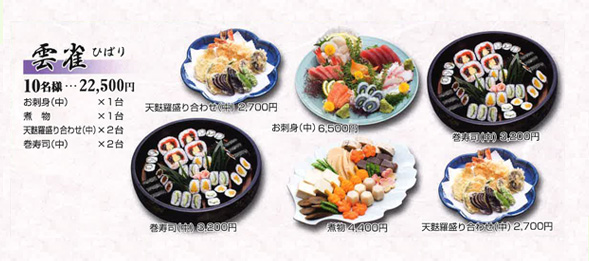
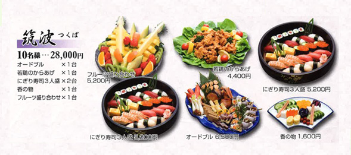
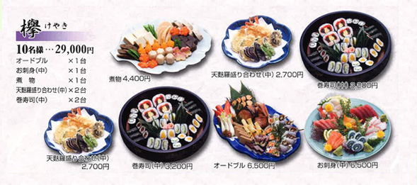
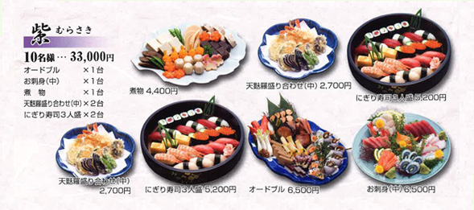
松花堂料理（告別式）
精進落としの席にふさわしい
御膳スタイルのお料理をご用意致しました。
- 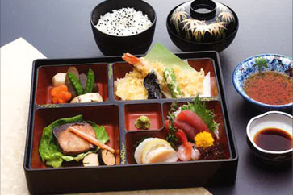
- 葛 くず
- 3,500円（税別）
- 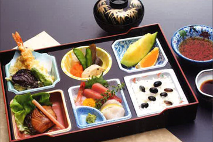
- 菖蒲 あやめ
- 4,000円（税別）
- 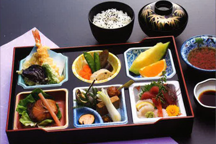
- 萩 はぎ
- 4,400円（税別）
- 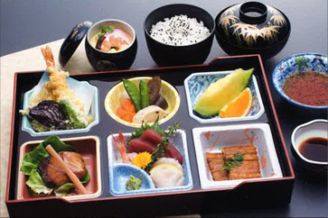
- 菫 すみれ
- 5,800円（税別）
- 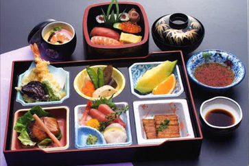
- 菊 きく
- 6,900円（税別）
- 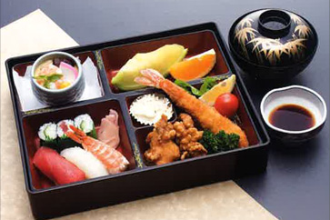
- お子様用懐石膳
- 2,000～3,000円（税別）
単品料理
お好みや人数に合わせて自由にお選びいただけるよう、
単品料理もバラエティ豊かに取り揃えました。
- お刺身
- 大 8,800円（税別）
中 6,500円（税別）
- 天ぷら盛り合わせ
- 大 4,400円（税別）
中 2,700円（税別）
- 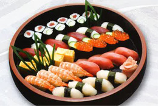
- にぎり寿司
- 4人盛 6,800円（税別）
3人盛 5,200円（税別）
- 若鶏の
からあげ - 4,400円（税別）
- 煮物
- 4,400円（税別）
- サンドイッチ
- 3,300円（税別）
- オードブル
- 6,500円（税別）
- 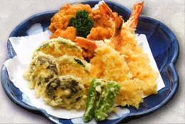
- 揚げ物盛り合わせ
- 2,700円（税別）
ご紹介の料理は一例です。
様々な料理をお手配できますので、
是非ご希望をお伝え下さい。
葬儀後のサポートについて
cuisine02
法事法要の他、葬儀後には
様々なしなければならないことがございます。
香典返し、挨拶回り、お礼状、遺品整理、
形見分け、相続、法律の手続き等あります。
さらに必要でしたら仏壇・仏具や墓石・霊園の購入など、
手配するべきこともございます。
上原ではそれら葬儀後の事柄についても、
しっかり対応いたしますので、
安心してご相談下さい。
千葉県野田市周辺の葬儀・家族葬・火葬式なら上原にお任せ下さい。
- 04-7124-3780
- 24時間365日対応 年中無休